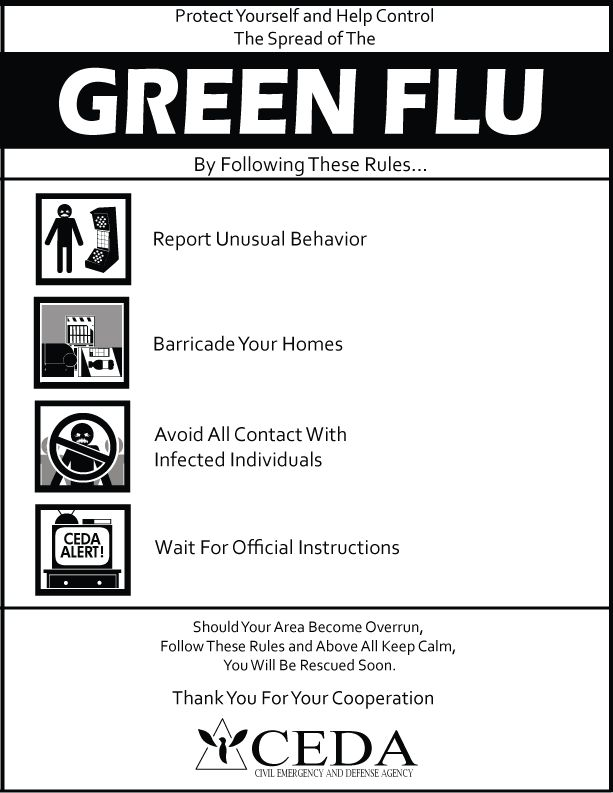

La gripe verde es la cepa que inicio el apocalipsis zombi en el juego Left 4 Dead.
En un inicio esta infección se creía que era una variación del virus de la rabia y el gobierno de los Estados unidos junto a la C.E.D.A. (Civil Emergency and Defense Agency) tomaron la decisión de investigar a fondo esta nueva enfermedad.
Al principio no le dieron la importancia necesaria a esta enfermedad resultando en la rápida propagación de esta e iniciando un escandalo en los habitantes de Estados Unidos.
En un intento de controlar la infección la C.E.D.A. lanzó el comunicado sobre la gripe verde aun encubriéndola cómo una variante de la rabia. En las indicaciones proporcionadas por la C.E.D.A. se alertaba a la población de mantener una distancia social, ocupar mascarilla y evitar el contacto con otras personas.
Además de tomar estas medidas se eligieron varios puntos clave dentro de las ciudades cómo centros de evacuación siendo el hospital Mercy (visto en la campaña No Mercy) y el hotel Vannah (visto en la campaña Dead Center).
Estos intentos para controlar la infección fueron en vano dado a que varios de los que asistieron a ese llamado eran portadores e infectaron a todo aquel que estaba, incluyendo agentes de la C.E.D.A. que llevaban equipamiento especializado para evitar la infección.
En las grandes ciudades la infección se esparció de forma más rápida dado a la asistencia de varios infectados a hospitales, centros comerciales, aeropuertos, parques de atracciones, entre otros. La conversión a infectados era inmediata y el único preventivo que tienen para anticipar la conversión a infectado es una tos constante.
La gripe verde siendo un virus que esta en constante mutación dio un resultado distinto en varios portadores del virus llamándolos así infectados especiales.
Estos infectados especiales fueron llamados Boomer, Charger, Witch, Smoker, Spitter, Hunter, Jockey y el más peligroso de todos ellos, el imponente Tank.
Se tiene la creencia que el origen de estas mutaciones de la gripe verde surge debido a un patrón que se repite en los infectados que se transforman en esa clase de infectados. El primero de ellos en aparecer fue el Boomer y estuvo bajo la investigación de la C.E.D.A. antes de que se perdiera el control sobre la transmisión del virus.
Ante el caos que estaba generando la gripe verde y el estrepitoso fallo de la C.E.D.A. por contener la infección el gobierno de los Estados Unidos tomó la decisión de bombardear ciudades y áreas donde la cantidad de infectados fuera abundante, además de dejar a un lado la moral y priorizar la contención del virus reuniendo grupos de sobrevivientes, con la promesa de evacuarlos, y matándolos a todos en el acto.
A las afueras de las ciudades en pequeños pueblos se negó la entrada del gobierno y la C.E.D.A. cómo una forma de prevención de entrada del virus, esto no basto para detener la infección. Otros grupos de sobrevivientes se montaron en barcos y decidieron quedarse sobre el agua, algunos de ellos ayudando a más grupos de sobrevivientes. Por último, están aquellos que se quedaron en las ciudades atrincherados.
De forma independiente se crearon grupos de exterminación de infectados, uno de los más famosos de este grupo son los “Ángeles de la muerte” los cuáles son autores de grandes masacres de infectados e infectados especiales, llevando un conteo de cuantos de estos han exterminado.
Demás sobrevivientes en busca de la C.E.D.A. o el ejercito de los Estados Unidos han creado refugios temporales llenos de armas, botiquines, bombas caseras y munición para aquellos que logren llegar con vida. Dentro de estos refugios temporales se pueden encontrar vestigios y registros sobre todas las personas que han pasado por esos refugios en forma de grafitis. Algunos de estos muestran la fe que tienen las personas en la C.E.D.A. mientras que otros escriben sobre su descontento con esta.

Después del caos de los primeros días de la infección es cuando finalmente el grupo de sobrevivientes se reúnen respectivamente. El grupo del primer juego, Left 4 Dead, se reúnen con la misión de ir al refugio que se encuentra en el hospital Mercy; el grupo del segundo juego, Left 4 Dead 2, se reúnen con la misión de escapar dado a la caída de la C.E.D.A. y su punto de evacuación en el hotel Vannah.
A pesar de que ambos grupos de sobrevivientes eliminen algunos infectados en enfrentamientos cuerpo a cuerpo, respiran las esporas que dejan algunos de estos al morir o al ser dañados por estos ellos no resultan infectados por la gripe verde.
La gripe verde fue un patógeno que evoluciono de manera rápida alcanzando la capacidad de modificar físicamente algunos de sus infectados, más en algunas personas a pesar de ser contagiadas estas no muestran algún efecto del virus. Ellos son denominados inmunes o portadores dado al no sufrir los efectos del virus, pero con la capacidad de infectar a otras personas si están cerca ellos.